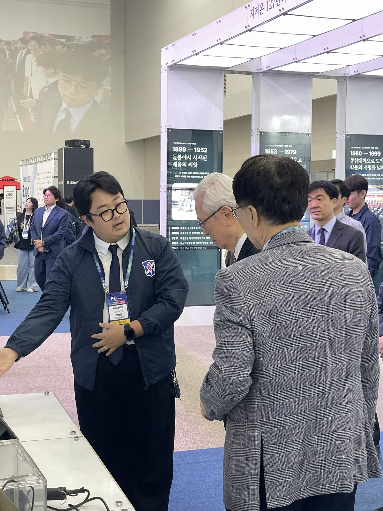
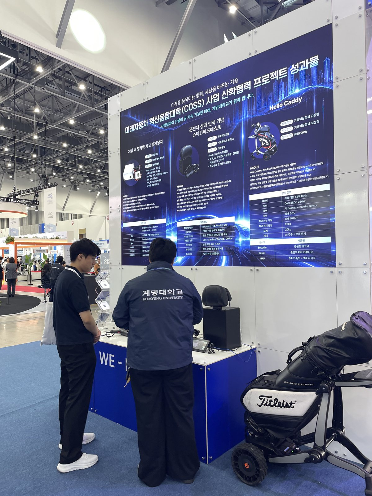
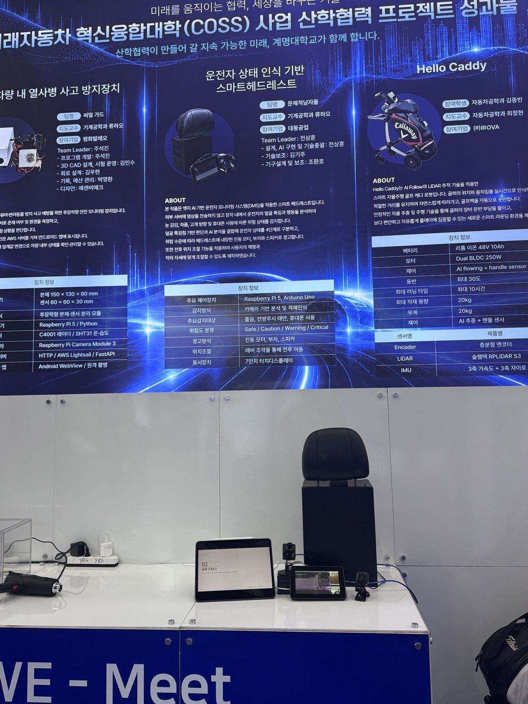
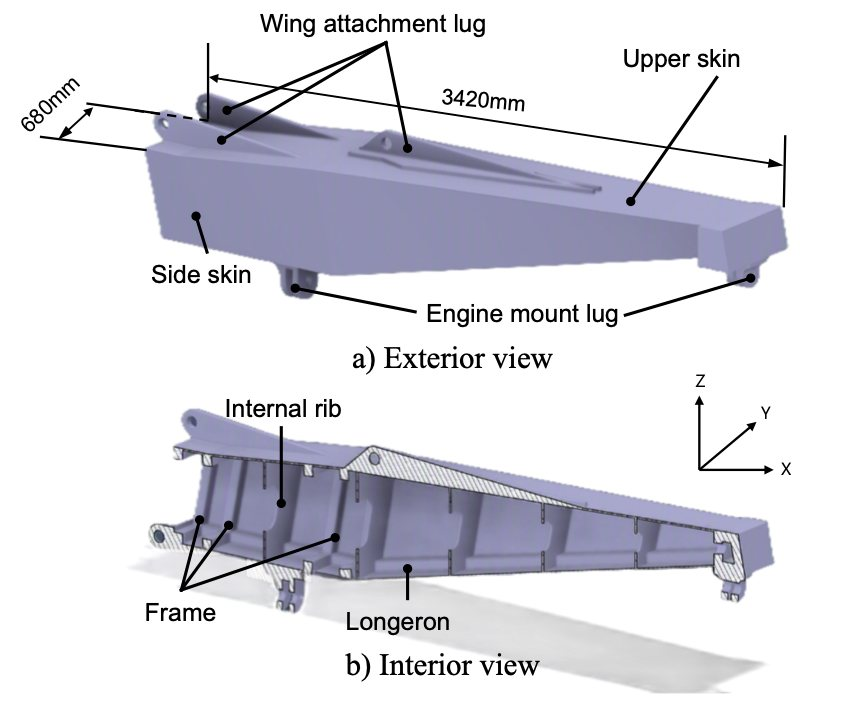
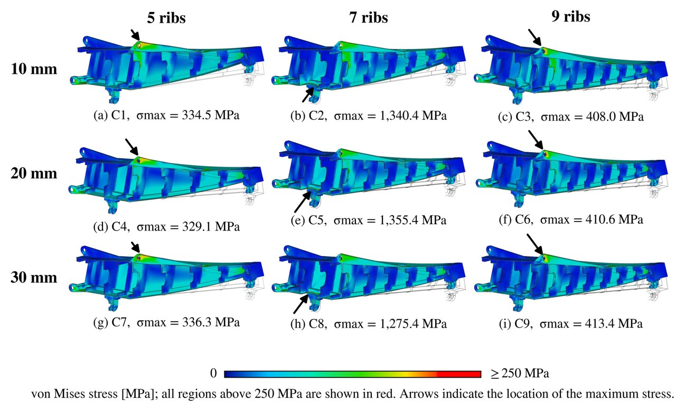
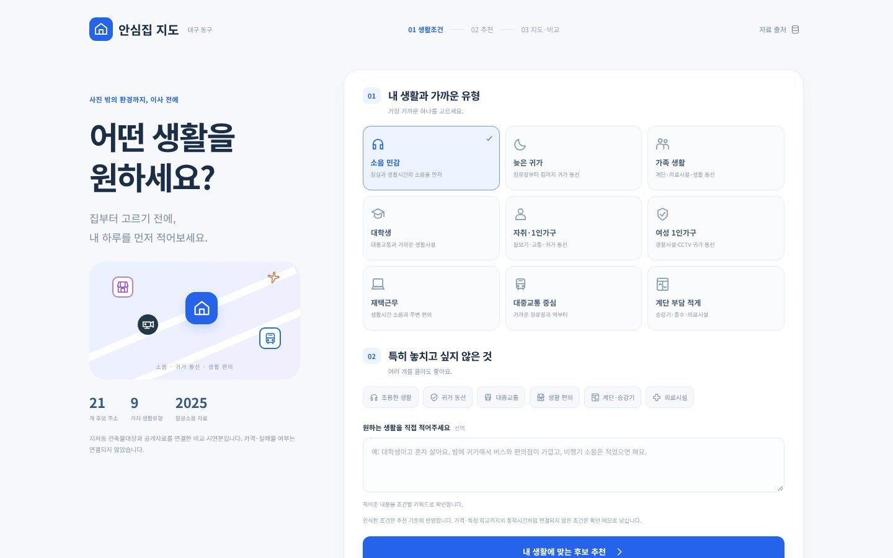
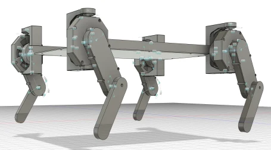

In Numbers
- −32.9%리브 위치만 옮겨 낮춘
파일런 최대응력 - 5번2026년 팀장으로 받은
1등·최우수·우수상 - 50→90명AAA 회장 임기 중
학기 말 잔류 인원 - 42번제1저자 논문
원고 수정
전상훈
Jeon Sanghun · Mechanical Engineering
2026 Portfolio
기계공학도
전상훈 입니다.
모르면 배우고, 시작했으면 끝까지 해낸다.
늦게 출발했지만, 늦게 도착하지 않는다
공고 애니메이션 기능부에서 훈련해 지방기능경기대회 금상을 받았고, 풍물부로 나간 마이스터 예술제에서는 대전교육감상을 받았습니다. 졸업 후 바로 대학에 가지 않았습니다. 회사에 다녔고, 군 복무를 마친 뒤 건설 현장에서 안전감시단과 안전관리자로 일하며 설비 하나의 문제가 곧 사람의 안전이라는 것을 배웠습니다.
Before
여러 길을 돌아 늦은 나이에 기계공학과에 입학하며 세운 다짐입니다. 오랜만의 공부에 적응하려고 수업에서 만난 친구들을 모아 스터디를 만들었고, 이 모임은 18명이 함께하는 스터디로 커져 4년째 이어지고 있습니다.
1st year
천체관측 동아리 AAA에 들어가 그 학기 관측 6번에 모두 참여했고, 2학기에 학술부장을 맡았습니다. 장비 운용과 날씨·장소·인원 확인을 맡으며 준비가 결과를 만든다는 것을 배웠습니다. 같은 학기 과학관 천체관측 도우미 봉사도 시작했습니다.
2nd year
입부 1년 만에 AAA 회장이 되었습니다. 부원 의견을 운영에 반영하고 만족도 조사와 소모임을 도입해 학기 말 잔류 인원을 50명에서 90명으로 늘렸습니다. KMPAC 촬영부장으로 공용 카메라 관리 책임을 나눈 뒤 고장·분실은 0건. 달성군시설관리공단 기자단 팀장으로 사진과 홍보영상을 만들었습니다.
3rd year
캡스톤 팀장으로 Python·OpenCV·Raspberry Pi를 처음 배워 스마트 헤드레스트를 완성했고, 학과 1위, 교내 최우수상을 받고 DIFA에서 전시했습니다. 생성형 AI 공모전에서 장려상을 받은 안심집 지도 프로토타입은 보완을 거듭해 지역혁신 페스티발 최우수상으로 이어졌습니다. 자원공유 멘토링에서는 팀장으로 1등을 했습니다. 전산구조해석 수업에서 시작한 공부는 제1저자 파일런 연구가 되었습니다. 지도교수님과 8번 넘게 만나며 원고를 42번 고쳐 썼습니다.
4th year
파일런 연구는 학회 투고를 준비하고 있고, 두 갈래의 공부가 만나 에스컬레이터 피로수명 예측 AI를 개발하고 있습니다. 일반기계기사를 준비하며, 시민이 매일 쓰는 설비를 지키는 공기업 기계직을 목표로 합니다.
Next
Works
DMS 탑재형 스마트 헤드레스트
졸음은 운전자 본인이
가장 늦게 알아챕니다.
카메라로 눈 감김·하품·시선 이탈을 읽고, 머리 바로 뒤에서 진동과 소리로 단계별 경고를 주는 헤드레스트를 만들었습니다.

전시 중 장치가 켜지지 않았습니다. 멀티미터로 전압을 재 전원 용량 부족을 찾아 고쳤고, 켜는 순서를 매뉴얼로 만들어 남은 기간엔 누구나 켤 수 있게 했습니다.
2.4초 · 4/4명 = 정차 차량 · 피험자 4명 · 위험 단계 진입 9회 · 소프트웨어 판정 시간 기준. 실주행·저조도는 미검증.



팀 페이지에서 자세히 보기
하드웨어 · AI 모델 · 경고 단계 · 팀원
항공기 엔진 파일런 구조해석
리브를 늘리면
응력은 정말 줄어들까?
리브 개수(5·7·9개)와 두께(10·20·30mm)를 조합한 9개 모델을 선형 정적 유한요소해석으로 비교했습니다. Ti-6Al-4V · Fusion 360.


리브를 늘려도 최대응력이 일정하게 줄지 않았습니다. 이상한 경향을 보고 모델을 다시 확인해 메시를 다시 만들고, 응력이 모이는 위치를 따라가 보니 개수·두께보다 외판을 지지하는 위치가 문제였습니다.

한계 — 909.0 MPa도 항복강도(765 MPa)를 넘어 추가 보강이 필요합니다. 학회 투고 준비 중.
문제적 사람들 — 안심집 지도 · 지역혁신 페스티발 최우수상
문제를 찾으면 직접 만들고,
직접 시험하고, 확인된 것만 말한다.
급훈은 “똑바로 해라”. 헤드레스트에 이어 두 번째로, 집을 고를 때 놓치기 쉬운 항공기 소음·밤길·생활 동선을 한 지도에서 비교하는 웹 서비스를 만들었습니다. 저는 아이디어 구체화와 웹 시연 구현을 맡았습니다.

문제적 사람들
팀원 · 원칙 · 두 프로젝트 기록
안심집 지도 체험하기
m.site.naver.com/2hSyT
그 밖에 해낸 것들
Research · 공동저자
대한기계학회 동역학·제어·로봇부문 2026 춘계학술대회 포스터. CCTV 영상 기반 위치와 Simulink 단진자 모델을 비교했습니다. 연구보조로 운동 방정식 정리를 맡았습니다.
Poster · 팀장 · 장려상(3위)
제7회 국제지역학 포스터 논문 발표회. 다른 전공 학생들과 계명대·긴키대를 비교하고 설문 55명을 분석해 38개 팀 중 3위.
Mentoring · 팀장 · 1등
성당중학교 학생 대상 우주체험. 예산이 80만 원에서 40만 원으로 줄자 조별 활동으로 다시 설계했고, 응답 17명 전원이 만족했습니다.
Maker · 부팀장 · 장려상(3위)
아두이노 메이커 공모전에서 소형 e-코너 차량의 아두이노 작업을 맡았습니다.
RISE 산학협력 동아리 · 2026.02–07
다리마다 3개의 자유도를 가진 보행 로봇을 팀으로 제작했습니다. 저는 기계 부품을 설계하고 전체 구조에 맞는지 검토했습니다. 팀원들과 설계안을 수정하고 결과보고서를 작성했습니다.

Ongoing
구조해석과 Python, 두 갈래 공부가 만난 주제. 고장 나기 전에 알아채는 정비를 목표로 개발 중입니다.

Record
수상과 활동
K-STAR 2026-2 S단계 1차 심사 선발 — 학과 첫 F영역 S단계 인증에 도전하고 있습니다.
not late.
현장에서만 할 수 있는 일을 해내겠습니다.